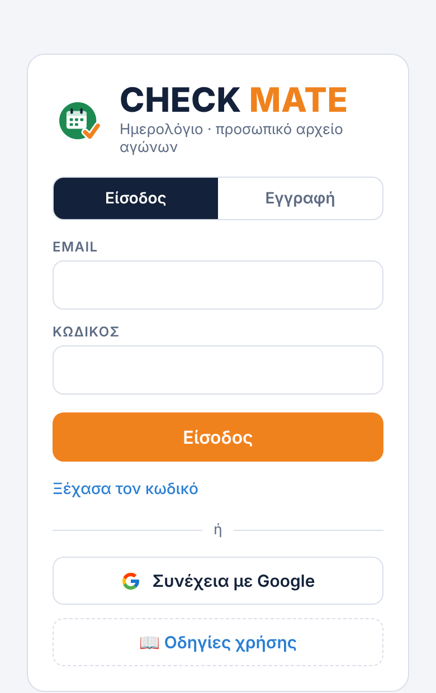
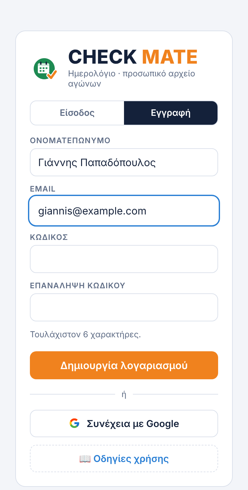
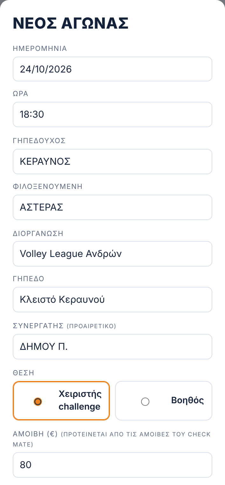
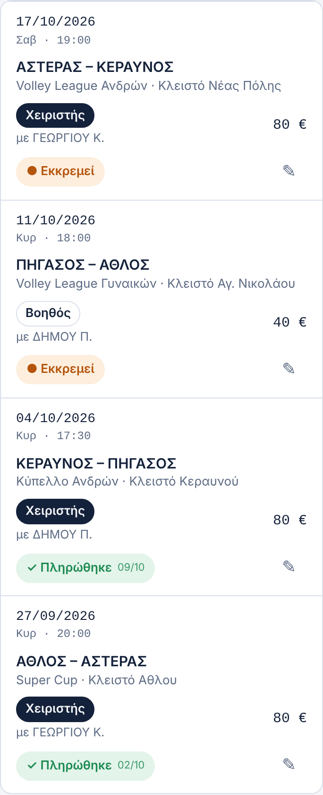
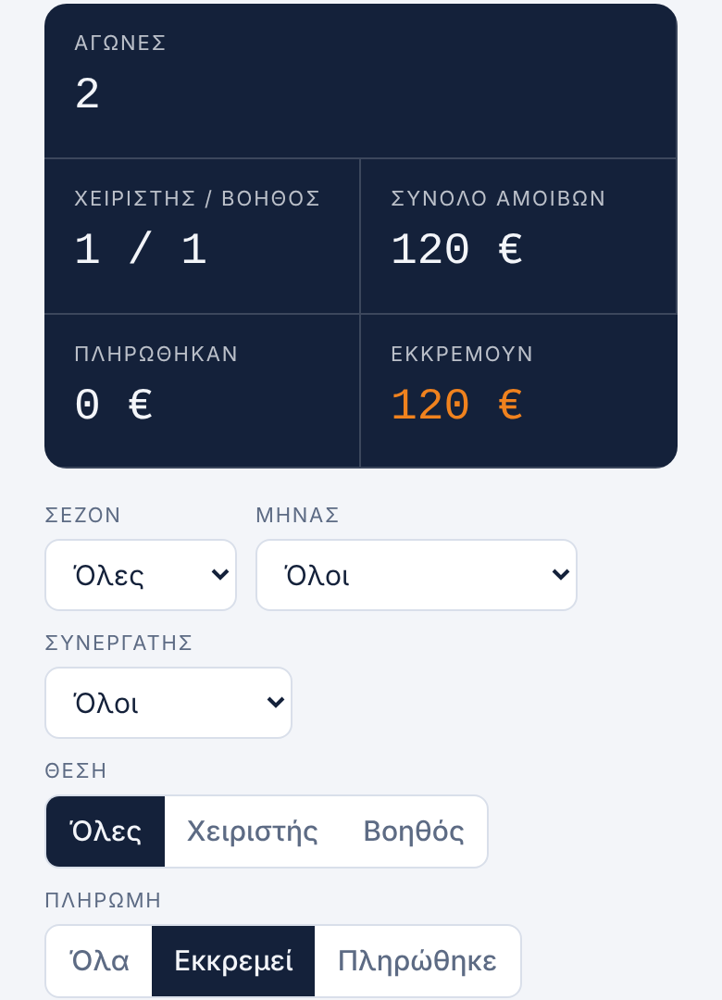

Το Ημερολόγιο είναι μια μικρή εφαρμογή για προσωπική χρήση. Γράφετε μόνοι σας τους αγώνες που δουλέψατε, ως Χειριστής ή Βοηθός, την αμοιβή και αν πληρωθήκατε. Έτσι έχετε το δικό σας αρχείο και μπορείτε να το συγκρίνετε με όσα δείχνει το Check Mate.
Σύνδεσμος: https://tsimpinosbv.github.io/checkmate/imerologio.html
🔒 Μόνο εσείς βλέπετε το ημερολόγιό σας, ούτε οι διαχειριστές. Ό,τι γράφετε ή σβήνετε εδώ δεν αλλάζει τις αναθέσεις σας στο Check Mate.
Βήμα 1 · Είσοδος ή εγγραφή
Ανοίξτε τον σύνδεσμο. Θα δείτε την οθόνη εισόδου με το πράσινο εικονίδιο.
- Έχετε ήδη λογαριασμό στο Check Mate; Μπείτε με τα ίδια στοιχεία, ή πατήστε Συνέχεια με Google.
- Δεν έχετε; Πατήστε Εγγραφή, γράψτε ονοματεπώνυμο, email και έναν κωδικό (τουλάχιστον 6 χαρακτήρες) δύο φορές, και πατήστε Δημιουργία λογαριασμού.


Δεν χρειάζεται έγκριση από τον διαχειριστή. Μόλις μπείτε, το ημερολόγιό σας είναι έτοιμο.
Βήμα 2 · Καταχώριση αγώνα

Πατήστε + Νέος αγώνας και συμπληρώστε:
- Ημερομηνία και ώρα,
- Γηπεδούχο και φιλοξενούμενη ομάδα,
- Διοργάνωση και γήπεδο,
- Συνεργάτη (προαιρετικό): με ποιον δουλέψατε,
- Θέση: Χειριστής challenge ή Βοηθός.
Η αμοιβή μπαίνει μόνη της από τις αμοιβές του Check Mate, ανάλογα με τη θέση. Αν πήρατε διαφορετικό ποσό, αλλάξτε την.
Στις Σημειώσεις μπορείτε να γράψετε ό,τι θέλετε, π.χ. ώρα προσέλευσης ή τρόπο πληρωμής. Πατήστε Αποθήκευση.
Η εφαρμογή θυμάται τις ομάδες, τα γήπεδα και τις διοργανώσεις που έχετε γράψει και σας τα προτείνει την επόμενη φορά.
Αγώνες από το Check Mate
Δεν χρειάζεται να τους γράφετε. Κάθε φορά που ανοίγετε το Ημερολόγιο, όλες οι αναθέσεις σας από το Check Mate, και οι επόμενες, μπαίνουν μόνες τους, με θέση, συνεργάτη και αμοιβή, ως ● Εκκρεμεί.
- Μπαίνει κάθε αγώνας μία φορά: όσοι υπάρχουν ήδη δεν διπλασιάζονται.
- Όσο ένας επόμενος αγώνας δεν είναι πληρωμένος, ακολουθεί το Check Mate: αν αλλάξει μέρα, ώρα ή γήπεδο, αλλάζει κι εδώ· αν ακυρωθεί ή δοθεί σε άλλον, φεύγει από το Ημερολόγιο. Οι αγώνες που έγιναν μένουν.
- Αν σβήσετε έναν αγώνα που ήρθε από το Check Mate, δεν ξαναμπαίνει.
- Τα σήματα των ομάδων που έχει βάλει ο διαχειριστής στο Check Mate φαίνονται και εδώ, δίπλα στα ονόματα, ακόμα και σε αγώνες που γράψατε μόνοι σας (αρκεί η ομάδα να είναι γραμμένη με το ίδιο όνομα).
- Μετά τους διορθώνετε ή τους σημειώνετε πληρωμένους όπως όλους τους άλλους.
- Λειτουργεί μόνο αν ο λογαριασμός σας είναι συνδεδεμένος με το όνομά σας στο Check Mate.
Βήμα 3 · Πληρωμές

Κάθε αγώνας δείχνει ημερομηνία, ομάδες, θέση, συνεργάτη, αμοιβή και κατάσταση πληρωμής.
- Όταν πληρωθείτε, πατήστε ● Εκκρεμεί. Γίνεται ✓ Πληρώθηκε, με την ημερομηνία πληρωμής.
- Πατήστε το ξανά αν το σημειώσατε κατά λάθος.
- Με το ✎ στα δεξιά διορθώνετε τον αγώνα, αλλάζετε την ημερομηνία πληρωμής ή τον διαγράφετε.
Σύνολα, φίλτρα και σύγκριση με το Check Mate

Στην κορυφή βλέπετε πόσους αγώνες έχετε, πόσους ως Χειριστής και πόσους ως Βοηθός, το σύνολο αμοιβών, πόσα πληρώθηκαν και πόσα εκκρεμούν.
Τα σύνολα ακολουθούν τα φίλτρα: σεζόν, μήνα, συνεργάτη, θέση, πληρωμή και αναζήτηση. Για παράδειγμα, «Εκκρεμεί» δείχνει μόνο όσα δεν έχετε πληρωθεί ακόμα.
Σύγκριση: διαλέξτε τον ίδιο μήνα και εδώ και στο Check Mate, και ελέγξτε ότι συμφωνούν οι αγώνες, τα σύνολα και τα πληρωμένα. Αν κάτι διαφέρει, μιλήστε με τον διαχειριστή.
Εξαγωγή
- ⬇ Excel: οι αγώνες που βλέπετε (με τα φίλτρα) σε αρχείο Excel, με φύλλο «Σύνοψη» (σύνολα και ανά συνεργάτη) και φύλλο «Αγώνες». Κρατήστε το και ως αντίγραφο ασφαλείας.
- 📄 Αναφορά: ανοίγει πάνω από το Ημερολόγιο σελίδα με σύνολα, ανάλυση ανά συνεργάτη και όλους τους αγώνες. 🖨 Εκτύπωση / PDF για εκτύπωση ή αποθήκευση ως PDF, ← Επιστροφή για να γυρίσετε.
Εγκατάσταση στο κινητό ή στον υπολογιστή
Το Ημερολόγιο εγκαθίσταται χωριστά από το Check Mate, με δικό του πράσινο εικονίδιο. Αν έχετε εγκαταστήσει και το Check Mate, θα έχετε δύο εικονίδια.

- Android: πατήστε 📲 Εγκατάσταση στο κάτω μέρος της σελίδας, ή Chrome ⋮ → Εγκατάσταση εφαρμογής (ή «Προσθήκη στην αρχική οθόνη»).
- iPhone / iPad: ανοίξτε τον σύνδεσμο στο Safari → Κοινοποίηση (τετράγωνο με βέλος ↑) → Προσθήκη στην οικία → Προσθήκη.
- Υπολογιστής: Chrome: εικονίδιο εγκατάστασης δεξιά στη γραμμή διευθύνσεων. Edge: ⋯ → Εφαρμογές → Εγκατάσταση αυτής της τοποθεσίας ως εφαρμογής.
🌙 Σκούρο / ☀ Ανοιχτό θέμα
Κάτω στη σελίδα, δίπλα στο «Σχετικά», υπάρχει ο διακόπτης 🌙 Σκούρο (ή ☀ Ανοιχτό, αν είστε ήδη σε σκούρο). Ένα πάτημα αλλάζει την εμφάνιση.
Στην αρχή η εφαρμογή ακολουθεί το κινητό ή τον υπολογιστή σας. Μόλις πατήσετε τον διακόπτη, η επιλογή σας μένει σε αυτή τη συσκευή και για τις τρεις εφαρμογές (Check Mate, Ημερολόγιο, V.C. Tips).
Νέα έκδοση: ενημέρωση με ένα πάτημα
Όταν ανεβαίνει νέα έκδοση της εφαρμογής, εμφανίζεται πάνω στην οθόνη ένα πορτοκαλί κουμπί ⟳ Νέα έκδοση · πάτα εδώ. Πατήστε το και η εφαρμογή ενημερώνεται και ξανανοίγει μόνη της. Δεν χρειάζεται να την εγκαταστήσετε ξανά ούτε να σβήσετε κάτι. Αν δεν το πατήσετε, η ενημέρωση γίνεται έτσι κι αλλιώς την επόμενη φορά που θα ανοίξετε την εφαρμογή.
Οι εφαρμογές μας
Τρεις ξεχωριστές εφαρμογές, με τον ίδιο λογαριασμό. Κάθε μία εγκαθίσταται χωριστά, με το δικό της εικονίδιο.
 Check MateΑναθέσεις αγώνων και πληρωμές.tsimpinosbv.github.io/checkmate/
Check MateΑναθέσεις αγώνων και πληρωμές.tsimpinosbv.github.io/checkmate/ ΗμερολόγιοΤο προσωπικό σας αρχείο αγώνων και πληρωμών.tsimpinosbv.github.io/checkmate/imerologio.html
ΗμερολόγιοΤο προσωπικό σας αρχείο αγώνων και πληρωμών.tsimpinosbv.github.io/checkmate/imerologio.html V.C. TipsΟδηγός στησίματος, tips και γήπεδα.tsimpinosbv.github.io/vctips/
V.C. TipsΟδηγός στησίματος, tips και γήπεδα.tsimpinosbv.github.io/vctips/Όλες μαζί, σε μία σελίδα: Check Mate Suite · tsimpinosbv.github.io
- Στο Suite μπαίνετε μία φορά με τον λογαριασμό σας και ανοίγετε όποια εφαρμογή θέλετε. Αρκεί να εγκαταστήσετε μόνο το Suite.
- Μέσα σε κάθε εφαρμογή, το στρογγυλό κουμπί κάτω αριστερά ανοίγει τις άλλες δύο. Το σπιτάκι γυρίζει στην αρχική σελίδα του Suite.
- Το κουμπί ⓘ Σχετικά στο κάτω μέρος δείχνει τον δημιουργό και στοιχεία επικοινωνίας.
Όταν στέλνετε έναν από αυτούς τους συνδέσμους σε Viber, WhatsApp ή email, εμφανίζεται κάρτα με το εικονίδιο και το όνομα της εφαρμογής.
Συχνά προβλήματα
| Πρόβλημα | Τι κάνω |
|---|---|
| «Λάθος email ή κωδικός» | Ελέγξτε το email. Αν γραφτήκατε με Google, πατήστε «Συνέχεια με Google». Αλλιώς «Ξέχασα τον κωδικό». |
| Ξέχασα τον κωδικό | Στην είσοδο: Ξέχασα τον κωδικό → email → Αποστολή συνδέσμου. Κοιτάξτε και στα ανεπιθύμητα. |
| Δεν βλέπω τους αγώνες μου | Ελέγξτε ότι μπήκατε με τον ίδιο λογαριασμό, και πατήστε «Καθαρισμός φίλτρων». |
| Δεν βλέπω τις αναθέσεις του Check Mate εδώ | Μπαίνουν μόνοι τους όταν ανοίγετε το Ημερολόγιο. Αν δεν μπαίνει κανένας, ο λογαριασμός σας δεν έχει συνδεθεί ακόμα με το όνομά σας στο Check Mate. |
| Θέλω να βγω | Κουμπί Αποσύνδεση στο κάτω μέρος της σελίδας, δίπλα στο «Σχετικά». |
| Οτιδήποτε άλλο | Τηλεφωνήστε στον κ. Νικόλα Παπαχατζή ή στον κ. Μιχάλη Τσιντομηνά. |
Οι εικόνες είναι παραδείγματα με φανταστικά στοιχεία.